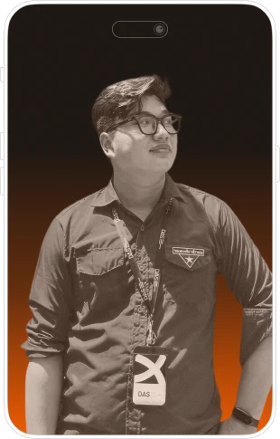

Về tôi

Kinh nghiệm
ELECTRIC BIRD | UI/UX Designer (2026)
- Thiết kế nền tảng SaaS quản lý thống nhất vận hành mọi dự án điện mặt trời rooftop và farm (dự án đến 8 MW) mà công ty làm O&M, xây dựng bộ UI Kit riêng. Xem dự án
- Thiết kế hệ thống quản lý nhân sự nội bộ (HRM) cho chấm công và hồ sơ nhân sự, bàn giao UI đầy đủ trạng thái và edge case. Xem dự án
- Chuyển file HRM khoảng 18.000 layer từ ZEN.Kaiz FREE sang ZEN.Kaiz PRO bằng Claude qua Figma MCP, còn 0 tham chiếu cũ.
- Thiết kế hệ thống đào tạo nội bộ (E-learning) để nhân viên làm bài kiểm tra ngay trên app, dùng ZEN.Kaiz PRO.
HOUSE OF TECH | UI/UX Designer (2025 – 2026)
- ENJU: thiết kế UI web cho nền tảng SaaS gom Excel, hoá đơn và tin nhắn của Property Manager cho thuê căn hộ dịch vụ, cho 3 vai trò; thiết kế nhận diện thương hiệu ENJU.
- CIVITAS: dựng wireframe, thiết kế website và trang waitlist cho nền tảng kết nối chủ bất động sản với người tìm đất phát triển dự án; thiết kế logo, poster, banner.
CẦN THIỆP BIỂU | Freelance UI Designer (2025)
- Cải thiện UI và user flow hệ thống EdTech cho Admin, quản lý nhóm và giáo viên, do vấn đề giao tiếp giữa chủ dự án và developer. Đã bàn giao toàn bộ UI theo yêu cầu.
Học vấn
UI/UX Design Mastery (2026)
- DAS – Design Anthropology School
Hệ thống thông tin quản lý (2025)
- Trường Đại học Tài chính – Marketing (UFM)
UI Foundation (2024)
- Khoá học online tại UXFoundation